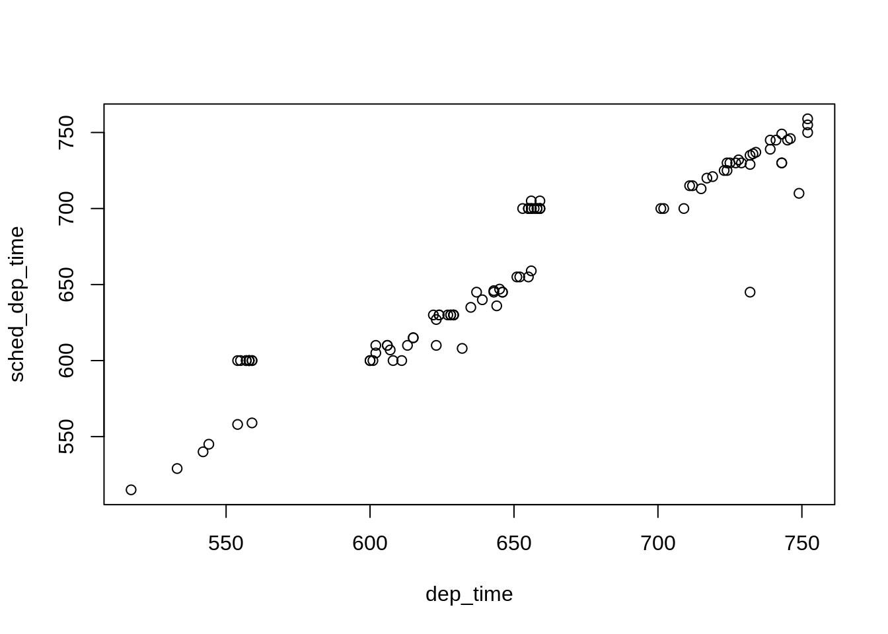

2.1 January flights
Summary statistics for January

## year month day dep_time sched_dep_time
## Min. :2013 Min. :1 Min. : 1.00 Min. : 1 Min. : 500
## 1st Qu.:2013 1st Qu.:1 1st Qu.: 8.00 1st Qu.: 907 1st Qu.: 900
## Median :2013 Median :1 Median :16.00 Median :1409 Median :1359
## Mean :2013 Mean :1 Mean :15.99 Mean :1347 Mean :1341
## 3rd Qu.:2013 3rd Qu.:1 3rd Qu.:24.00 3rd Qu.:1738 3rd Qu.:1725
## Max. :2013 Max. :1 Max. :31.00 Max. :2359 Max. :2359
## NA's :3126
## dep_delay arr_time sched_arr_time arr_delay
## Min. : -30.00 Min. : 1 Min. : 2 Min. : -70.00
## 1st Qu.: -5.00 1st Qu.:1118 1st Qu.:1129 1st Qu.: -15.00
## Median : -2.00 Median :1556 Median :1608 Median : -3.00
## Mean : 10.04 Mean :1523 Mean :1548 Mean : 6.13
## 3rd Qu.: 8.00 3rd Qu.:1946 3rd Qu.:1950 3rd Qu.: 13.00
## Max. :1301.00 Max. :2400 Max. :2359 Max. :1272.00
## NA's :3126 NA's :3216 NA's :3636
## carrier flight tailnum origin
## Length:162024 Min. : 1 Length:162024 Length:162024
## Class :character 1st Qu.: 542 Class :character Class :character
## Mode :character Median :1459 Mode :character Mode :character
## Mean :1959
## 3rd Qu.:3750
## Max. :8500
##
## dest air_time distance hour
## Length:162024 Min. : 20.0 Min. : 80 Min. : 5.00
## Class :character 1st Qu.: 84.0 1st Qu.: 483 1st Qu.: 9.00
## Mode :character Median :137.0 Median : 872 Median :13.00
## Mean :154.2 Mean :1007 Mean :13.16
## 3rd Qu.:194.0 3rd Qu.:1372 3rd Qu.:17.00
## Max. :667.0 Max. :4983 Max. :23.00
## NA's :3636
## minute time_hour
## Min. : 0.0 Min. :2013-01-01 05:00:00
## 1st Qu.: 5.0 1st Qu.:2013-01-08 17:00:00
## Median :25.0 Median :2013-01-16 12:00:00
## Mean :25.2 Mean :2013-01-16 12:56:50
## 3rd Qu.:40.0 3rd Qu.:2013-01-24 09:00:00
## Max. :59.0 Max. :2013-01-31 23:00:00
##